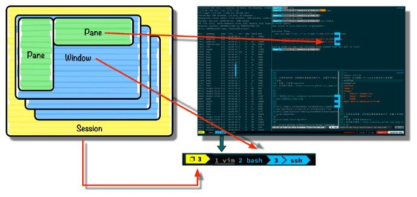

tmux简单使用
安装
ubuntu下
1 | sudo apt-get install tmux |
安装完后运行
基本概念
Tmux基于典型的c/s模型，主要分为会话、窗口和面板三个元素：
- Session：输入tmux后就创建了一个会话，一个会话是一组窗体的集合。
- Window：会话中一个当前活动的窗口。
- Pane:一个窗口可以分成多个面板

图中左下角的3显示为当前会话，随后1 vim,2 bash,3 ssh 分别是3个窗口，蓝色bash表示当前窗口.
图中用蓝色数字标记的1,2,3分别是bash窗口的三个面板(Pane)。你还可以在tmux配置文件中给状态栏添加时间、天气等信息。
操作(有个前缀)
Tmux的所有操作必须使用一个前缀进入命令模式，默认前缀为ctrl+b，很多人会改为ctrl+a,你可以修改tmux.conf配置文件来修改默认前缀：
1 | #前缀设置为<Ctrl-a> |
窗格操作(Pane)
- % 向右平分出两个窗格
- “ 向下平分出两个窗格
- x 关闭当前窗格(当窗口中只剩一个pane时，就是关闭窗口)
- q 显示所有窗格的序号，在序号出现期间按下对应的数字，即可跳转至对应的窗格
- { 当前窗格前移(所有窗口大小不变，内容按从上往下，从左往右。往前走)
- } 当前窗格后移
- ; 选择上次使用的窗格，只能记住一次
- o 选择下一个窗格，也可以使用上下左右方向键来选择(改成vim的 hjkl)
- space 切换窗格布局，tmux 内置了五种窗格布局，也可以通过 ⌥1 至 ⌥5来切换
- z(zoom) 最大化当前窗格，再次执行可恢复原来大小
窗口操作(window)
tmux 除了窗格以外，还有窗口（window） 的概念。依次使用以下快捷键来熟悉 tmux 的窗口操作：
- c(create) 新建窗口，此时当前窗口会切换至新窗口，不影响原有窗口的状态
- & 关闭当前窗口
- p(previous) 切换至上一窗口
- n(next) 切换至下一窗口
- w(window) 窗口列表选择，注意 macOS 下使用 ⌃p 和 ⌃n 进行上下选择
- l 在前后两个窗口间互相切换
- 0 切换至 0 号窗口，使用其他数字 id 切换至对应窗口(0~9,在10往上就不行了)
- . 修改当前窗口编号；相当于窗口重新排序(一个是编号，一个是名字1:~xioaming)
- ,(搜狗) 重命名窗口，可以使用中文，重命名后能在 tmux 状态栏更快速的识别窗口 id
- f(find) 根据窗口名搜索选择窗口，可模糊匹配
- ctrl+方向 调整窗口大小(技巧：按住ctrl+k再按方向键)
会话操作(session)
如果运行了多次 tmux 命令则会开启多个 tmux 会话（session）。在 tmux 会话中，使用前缀快捷键 ⌃b 配合以下快捷键可操作会话：
- s(session) 选择会话列表，就是开了几个tmux
- d detach 当前会话，运行后将会退出 tmux 进程，返回至 shell 主进程(但会话列表仍在，就是退出与保存)
- $ 重命名当前会话
- : 进入命令行模式；此时可以输入支持的命令，例如kill-server可以关闭服务器
- [ 进入复制模式；此时的操作与vi/emacs相同，按q/Esc退出([ space 鼠标 enter])
- 按前缀+[ 进入复制模式
- 按一下 space 开始复制，方向键选择复制区域
- 按 Enter 复制并退出copy-mode。
- 将光标移动到指定位置，按前缀+ ] 粘贴
在 shell 主进程下运行以下命令可以操作 tmux 会话：
1 | tmux ls # 列出所有 tmux 会话 |
除以上提到的快捷键以外，tmux 还有许多其他的快捷键和命令，使用前缀快捷键 ctrl+b 加 ? 可以查看所有的快捷键列表，该列表视图为 tmux copy 模式，该模式下可使用以下快捷键（无需加 ⌃b 前缀）：
- ⌃s 向前搜索
- q 退出 copy 模式
- ⌃v 下一页 翻页也可用pageup pagedown
- Meta v 上一页 （tmux 快捷键为 Emacs 风格，这里的 Meta 键可用 Esc 模拟）
常见配置与问题
1、鼠标滚屏
tmux 默认配置中最糟糕的体验就是滚屏查看和文本复制（大家可以先试试看）。你需要先使用 ⌃b [ 快捷键进入 copy 模式，然后使用翻页、字符定位来选择需要的字符，效率远没有鼠标选择来的快。
因此 tmux 提供了一些个性化配置项来优化这些配置，首先在 shell 中运行 touch ~/.tmux.conf 新建用户配置文件。在文件中增加以下内容：
1 | # 开启鼠标模式 |
配置文件修改完成后，可以 tmux kill-server 重启所有 tmux 进程，或者在 tmux 会话中使用 ctrl+b : 进入控制台模式，输入 source-file ~/.tmux.conf 命令重新加载配置(ubuntu上没这命令)。
2、 pane切换
切换面板就和vim一样了,方向键太变扭了
1 | # map Vi movement keys as pane movement keys |
3、美化 tmux-powerline
就是我的效果达不到例子那样